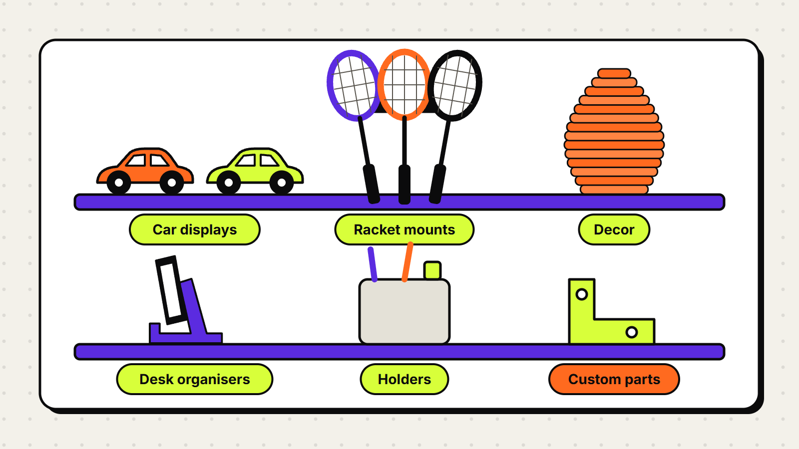

3D printing is good at solving small, specific problems: a shelf sized for a collection, a mount that keeps rackets off the floor, a stand that holds two controllers and a headset in one spot. Akrinity is a 3D printing studio in Bhiwandi, and our ready-made range grew from problems like these. Here is a tour of what we make, how the pieces are meant to be used, and where custom printing takes over.
Collectors run out of flat surfaces quickly. Our display pieces give small cars a place where each one can be seen. The range includes modular hexagon wall racks, tabletop shelves for five cars, and larger stands for bigger collections.
Cars are not included unless a product page says so. Check the slot size on the page against your models.
Rackets leaning in a corner get in the way and get knocked about. Wall mounts for badminton and padel gear keep them visible and off the floor, from small holders to a mount for sixteen rackets for a family, club, or school corner. Use wall fixings suited to your wall and to the total weight.

This is the part of the range used every day: sticky note and pen holders, a bedside caddy for the things that otherwise end up on the floor, a stand for two controllers and a headset, phone stands, and cable organisers. The idea is simple: give the objects you reach for a fixed place.

Watches, bracelets, and everyday pieces tangle when they share a drawer. Our tiered and bar-style stands keep them separate and visible on a dressing table, and double as a small display for a shop counter or a craft stall.

Printing makes shapes that are awkward to mould or carve, and decor shows this off with twisting forms and textured surfaces that use the stacked layers as a pattern. Treat printed vases as decorative: for fresh flowers and water, put a separate glass or sealed liner inside unless the product page says the vase holds water.
The range includes a Mother Mary statue and gaming pieces such as a pixel-style sword. Fine detail depends on size, process, and material, so check the photos and dimensions on the page. Our own character work uses original designs. We do not print licensed characters without written permission.
Egg trays and spoon or knife holders organise objects on a counter or shelf. They are non-food-contact pieces: do not store food in them. Read what that means before use.
Many of these items could be moulded in a factory, but only in very large numbers and in one fixed size. Printing suits a range like this for three reasons. First, a design can be improved between one batch and the next. Second, a piece can be made in a size that fits a particular collection or desk. Third, there is no need to hold large piles of stock: some pieces are printed after they are ordered.
It also has limits. Printed parts show fine layer lines, they are not suited to food or high heat, and colour choices depend on the filament available. Our comparison of printing, moulding, and machining explains when another method would serve you better.
The shop shows only part of what a printer can do. Customers also come with their own problems.

| You have | Service | Examples |
|---|---|---|
| A 3D file | Custom print | Prototypes, brackets, project parts |
| A sketch or photo | Design and print | Name plates, holders for a specific item, replacement clips |
| A larger quantity | Business and bulk | Corporate gifts, branded stands, repeat batches |
Start with the quote form, the design service, or business orders.
Tip: Close to what you want, but not quite? Send the product name with the change you need, such as a different width or number of slots, and ask for a quote.
Where a product has bulk price ranges, they appear on its page, with a button to request a bulk quote. Add your GSTIN for a business invoice. For personalised pieces, check spellings carefully before approving, since these are made for you and cannot be resold.
Our range changes as we add pieces, so the shop is always the current list. To learn how each order is handled, read what we do differently. Caring for your piece is covered in the care guide.